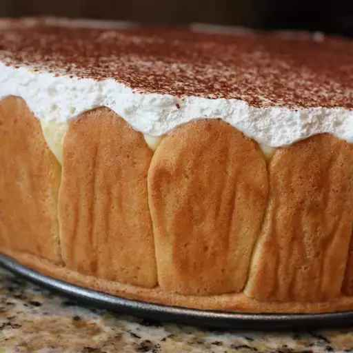

Tiramisu

Description
If you really want an all-out fancy restaurant style tiramisu with all the fixin's this is the one. People will speak of this
for years to come. You can also make it in a bowl like a trifle!
Ingredients
-
Ladyfingers
- 5 eggs, separated
- 3/4 cup white sugar, divided
- 1 cup all-purpose flour
- 1 teaspoon vanilla extract
- cup confectioners' sugar for dusting
-
Syrup
- 1 cup white sugar
- 1 cup boiling water
- 1/2 cup strong brewed coffee
- 1/4 cup rum
-
Filling
- 1 (8 ounce) container mascarpone cheese
- 2 cups confectioners' sugar
- 1/4 cup dark rum
- 1 teaspoon vanilla extract
- 2 cups heavy cream
-
Topping
- 2 (1 ounce) squares semisweet chocolate, grated
- 1/8 cup confectioners' sugar for dusting
Steps
- Preheat oven to 350 degrees F (175 degrees C). Line baking sheets with
parchment paper.
- In a medium bowl, whip egg yolks and 1/4 cup of sugar with an electric
mixer until thick and pale. In a separate bowl, whip egg whites (with
clean beaters) to soft peaks. Gradually sprinkle in the remaining 1/2
cup sugar while whipping to medium stiff peaks. Fold the egg yolk
mixture into the egg whites. Gently fold in the flour and 1 teaspoon
vanilla. The batter should be thick and pale yellow.
- Trace two 9 inch circles onto the parchment paper using a cake pan as
a guide. Spread or pipe batter to completely fill inside the lines of the
circles. Batter should be about 1/2 inch tall.
- Load the remaining batter into a pastry bag fitted with a half inch tip or
hole. Draw parallel lines onto another piece of parchment that are 3
inches apart. Pipe the batter back and forth just between the lines in a
compressed S motion, until you run out of batter. This is the part that
wraps around the outside of the cake. (It helps to have it in one piece,
but you can pipe individual fingers using the guidelines drawn on the
paper, if you prefer.) There may be extra.
- Bake in preheated oven 10 to 15 minutes, until firm but not browned.
Remove from the oven and dust generously with confectioners' sugar.
Set aside to cool.
- To make the syrup, stir together 1 cup sugar, boiling water, coffee and
1/4 cup rum until sugar is dissolved. Set aside.
- To make the filling, combine mascarpone, 2 cups confectioners' sugar,
dark rum and 1 teaspoon vanilla in a large bowl. Whisk together until
completely smooth, scraping the bottom of the bowl to remove any
lumps. Gradually whisk in the heavy cream. Whip with an electric mixer
until soft peaks form. Stop whipping when the mixture shows the first
sign of graininess.
- To assemble, line the sides of a 9-inch springform pan with parchment
or waxed paper. Place one of the ladyfinger rounds in the bottom of the
pan. Brush generously, but do not soak completely, with syrup. Place
the 3-inch high ladyfinger strips around the inside edge of the pan, so
that the sides are completely covered. Brush generously with syrup.
- Spread half of the filling mixture over the first ladyfinger round in the
pan. Place the remaining ladyfinger round on top of the filling. Soak the
second ladyfinger round with syrup until it cannot take any more.
Spread the remaining filling over that and smooth the top. Sprinkle
with grated chocolate. Refrigerate at least 4 hours.
- To serve, remove the sides of the pan and carefully remove the
parchment or waxed paper from the outside of the cake. Dust with
confectioners' sugar just before serving.